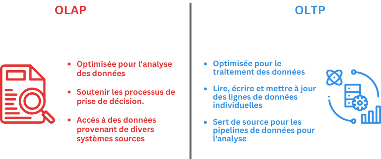

Modèles et Piplines de données
- MON
- 2023-2024
- temps 3
- Omar Salame
Je souhaite explorer les différents modèles de données ainsi que leur utilisation à travers des pipelines, tout en intégrant le processus ETL.
Table des matières
Introduction
Ce cours permet d'approfondir les connaissances sur les systèmes de bases de données, notamment avec des notions ttelles que les data marts, lakes et warehouses et les processus ETL. Il complète la compréhension en examinant les cinq facteurs de performance des bases de données : la charge de travail, le débit, les ressources, l'optimisation et la contention. Enfin, il aide à développer les compétences en conception de requêtes efficaces pour exploiter pleinement les capacités d'un système.
À la fin du cours, j'aimerais avoir la capacité de construire des modèles de données répondant à des questions commerciales spécifiques, d'appliquer le processus ETL aux scénarios de travail, d'explorer divers outils ETL, et de construire des pipelines pour livrer efficacement les données nécessaires.
Modélisation des données
Modèles de données et Schémas
Il existe différents aspects des bases de données et de leur influence sur le fonctionnement d'un système de Business Intelligence. Le cadre de la base de données, comprenant l'organisation des plateformes ainsi que le stockage et le traitement des données, affecte la manière dont les données sont utilisées. Par conséquent, comprendre les différentes technologies aide à prendre des décisions plus éclairées concernant les outils et les processus de BI. Cette lecture fournit une analyse détaillée des bases de données, y compris OLAP, OLTP, basées sur les lignes, en colonnes, distribuées, à hébergement unique, avec stockage et calcul séparés, et combinées.
Exemple: OLAP et OLTP
Exemple: OLAP et OLTP
Le traitement analytique en ligne (OLAP) et le traitement des transactions en ligne (OLTP) sont deux systèmes de traitement de données différents conçus à des fins différentes. OLAP est optimisé pour l'analyse de données complexes et les rapports, tandis qu'OLTP est optimisé pour le traitement transactionnel et les mises à jour en temps réel.

Eléments clés des schémas de base de données
Le schéma de la base de données vous permet de valider les données entrantes fournies à votre base de données de destination afin d'éviter les erreurs et de garantir que les données sont immédiatement utiles aux utilisateurs. Il est donc important de s'assurer que tous les éléments existent dans le schéma.
Quatre éléments clés
Quatre éléments clés
Pertinence des données: Le schéma décrit la manière dont les données sont modélisées et façonnées dans la base de données et doit englober toutes les données décrites.
Noms et types de données pour chaque colonne : Inclure les noms et les types de données pour chaque colonne de chaque table de la base de données.
Format cohérent : Veillez à la cohérence du formatage de toutes les entrées de données. Chaque entrée est une instance du schéma, elle doit donc être cohérente.
Clés uniques : Le schéma doit utiliser des clés uniques pour chaque entrée de la base de données. Ces clés établissent des connexions entre les tables et permettent aux utilisateurs de combiner des données pertinentes provenant de l'ensemble de la base de données.